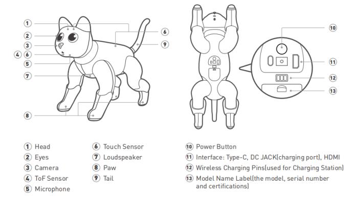
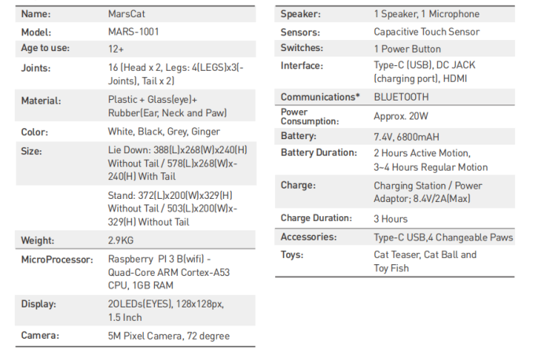
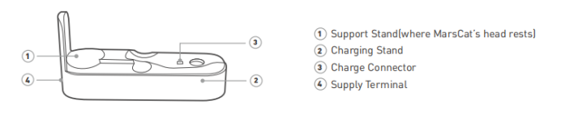

2.MarsCat and accessories
2.1 MarsCat
Structure Illustration

Product Parameter

2.2 Charging Station

Note:
- To let MarsCat charge its battery on its own on the charging station (self-charging) and get up from there, do not place objects, which may disturb MarsCat’s activities, around the charging station.
- Choose an open bright place without direct sunlight to place the charging station and avoid a place subject to high room temperatures of 35 °C (95 °F) and higher.
- Do not touch the charge connector with bare hands to avoid causing a bad contact.
- Do not exert force on the charging station, for example, step on or kick the charging station.
- Do not allow the charging station to be exposed to water or spill any type of liquids.
Product Parameter
| Power supply | 8.4V |
|---|---|
| Output voltage | 8.4V |
| Charging time | About 3 hours |
| Temperature | 5°C-35°C（41°F-95°F） |
| Size | 360×100×177（cm） |
| Weight | 1.27kg |
2.3 Charger
(图）
The ex-factory plug of the power supply has 2 circular holes, and we will provide a converter free according to your country. If the provided converter is not suitable, please purchase it by yourself.
Note:
- Use the supplied power adapter with the charging station. Use of any power adapter other than the supplied one will cause a malfunction of MarsCat.
- For connecting the power adapter to a power outlet that is easy to access.
- Any problem happens during charging, immediately unplug the power cord from the power outlet to cut the power supply.
- To avoid the risk of heat generation or a malfunction of the adapter, unplug the power cord from the power outlet after the charging is completed.
- The supplied power adaptor is exclusively designed for MarsCat's charging station. It should not be used with any other electric devices.
- To purchase a new one, please visit our offificial website: https://shop.elephantrobotics.com/.
Product Parameter
| Input voltage | 220V |
|---|---|
| Output voltage | 8.4V 2A |
| Charging time | About 3 hours |
| Size | 8×5×3.5（cm） |
| Weight | |
| Temperature | 5℃-35℃ |
| Cable length | 1m |
2.4 MarsBowl
（图）
Note:
- To ensure MarsCat can accurately identify MarsBowl, do not place any other objects around MarsBowl that may interfere with MarsCat’s activity.
- Please choose a bright room without direct sunlight to place MarsBowl.
- Do not exert excessive force on MarsBowl, for example, press or step on MarsBowl.
Produce Parameter
| Size | |
|---|---|
| Weight |
2.5 Toys
Customer can use toys as follows to play with MarsCat
- Cat Teaser/Toy Fish(supplied)
They are specially designed for MarsCat, MarsCat will show interest and pounce on Cat Teaser/Toy Fish when you show Cat Teaser/Toy Fish and slowly move them.
(配图)
- Ball(supplied)
It is specially designed for MarsCat, when MarsCat see this ball, he/she may approach the ball and make a pounce or kick.
(配图)